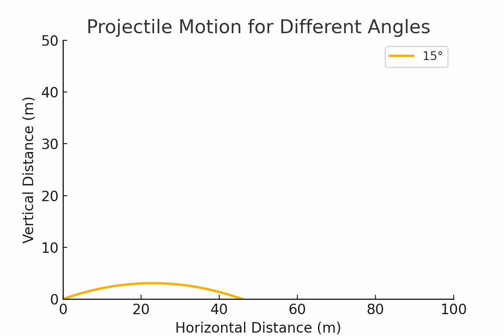

Problem 1
Investigating the Range as a Function of the Angle of Projection


1. Theoretical Foundation
Projectile motion is governed by Newton's laws. The equations of motion for a projectile launched at an angle \( \theta \) with initial velocity \( v_0 \) are derived from kinematic equations:
Differential Equation of Motion
The motion of a projectile is governed by the second-order differential equations: $$ \frac{d^2x}{dt^2} = 0, \quad \frac{d^2y}{dt^2} = -g $$ Integrating once: $$ \frac{dx}{dt} = v_0 \cos(\theta), \quad \frac{dy}{dt} = v_0 \sin(\theta) - g t $$ Integrating again: $$ x(t) = v_0 \cos(\theta) t, \quad y(t) = v_0 \sin(\theta) t - \frac{1}{2} g t^2 $$
Equations of Motion
- Horizontal displacement: $$ x(t) = v_0 \cos(\theta) t $$
- Vertical displacement: $$ y(t) = v_0 \sin(\theta) t - \frac{1}{2} g t^2 $$
To find the range \( R \), we determine the time of flight \( T_f \): $$ T_f = \frac{2 v_0 \sin(\theta)}{g} $$
Substituting into the horizontal displacement: $$ R = \frac{v_0^2 \sin(2\theta)}{g} $$
2. Analysis of the Range
- The maximum range occurs at \( \theta = 45^\circ \), yielding: $$ R_{\max} = \frac{v_0^2}{g} $$
- Gravity Influence: Lower gravity increases range (e.g., Moon vs. Earth).
- Velocity Impact: Higher velocity increases range quadratically.
3. Practical Applications
- Sports: Ball trajectories in football and golf.
- Engineering: Optimizing projectile launch angles.
- Astrophysics: Calculating satellite orbits and probes.
4. Implementation
The following Python script implements additional simulations based on professor's notes:
import numpy as np
import matplotlib.pyplot as plt
def projectile_trajectory(v0, angle, g=9.81, h=0, dt=0.05):
angle_rad = np.radians(angle)
vx = v0 * np.cos(angle_rad)
vy = v0 * np.sin(angle_rad)
x, y = [0], [h]
t = 0
while y[-1] >= 0:
t += dt
x.append(vx * t)
y.append(h + vy * t - 0.5 * g * t**2)
return np.array(x), np.array(y)
# 1. Three different velocities on the same plot
plt.figure(figsize=(8,5))
plt.ylim(0, 60)
for v0 in [10, 20, 30]:
x, y = projectile_trajectory(v0, 45)
plt.plot(x, y, label=f'v0 = {v0} m/s')
plt.xlabel("Horizontal Distance (m)")
plt.ylabel("Vertical Distance (m)")
plt.title("Projectile Motion with Different Velocities")
plt.legend()
plt.grid()
plt.show()
# 2. Same initial conditions on three different planets
plt.figure(figsize=(8,5))
plt.ylim(0, 60)
planets = {"Earth": 9.81, "Moon": 1.62, "Jupiter": 24.79}
for planet, g in planets.items():
x, y = projectile_trajectory(20, 45, g)
plt.plot(x, y, label=planet)
plt.xlabel("Horizontal Distance (m)")
plt.ylabel("Vertical Distance (m)")
plt.title("Projectile Motion on Different Planets")
plt.legend()
plt.grid()
plt.show()
# 3. Different heights
plt.figure(figsize=(8,5))
plt.ylim(0, 60)
for h in [0, 10, 20]:
x, y = projectile_trajectory(20, 45, 9.81, h)
plt.plot(x, y, label=f'Height = {h}m')
plt.xlabel("Horizontal Distance (m)")
plt.ylabel("Vertical Distance (m)")
plt.title("Projectile Motion with Different Initial Heights")
plt.legend()
plt.grid()
plt.show()
# 4. Air resistance vs. no air resistance
plt.figure(figsize=(8,5))
plt.ylim(0, 60)
def projectile_with_drag(v0, angle, g=9.81, h=0, dt=0.05, drag_coeff=0.1):
angle_rad = np.radians(angle)
vx, vy = v0 * np.cos(angle_rad), v0 * np.sin(angle_rad)
x, y = [0], [h]
t = 0
while y[-1] >= 0:
t += dt
vx -= drag_coeff * vx * dt
vy -= (g + drag_coeff * vy) * dt
x.append(x[-1] + vx * dt)
y.append(y[-1] + vy * dt)
return np.array(x), np.array(y)
x_no_drag, y_no_drag = projectile_trajectory(20, 45)
x_drag, y_drag = projectile_with_drag(20, 45)
plt.plot(x_no_drag, y_no_drag, label="No Air Resistance")
plt.plot(x_drag, y_drag, linestyle='dashed', label="With Air Resistance")
plt.xlabel("Horizontal Distance (m)")
plt.ylabel("Vertical Distance (m)")
plt.title("Projectile Motion With and Without Air Resistance")
plt.legend()
plt.grid()
plt.show()
5. Limitations and Future Work
- No Air Resistance (Basic Model): The extended model includes drag.
- Uneven Terrain: Not considered.
- Wind Effects: Future implementations could include wind effects.
Future Enhancements
- More detailed models incorporating wind and other real-world effects.
- Extend to 3D projectile motion simulations.